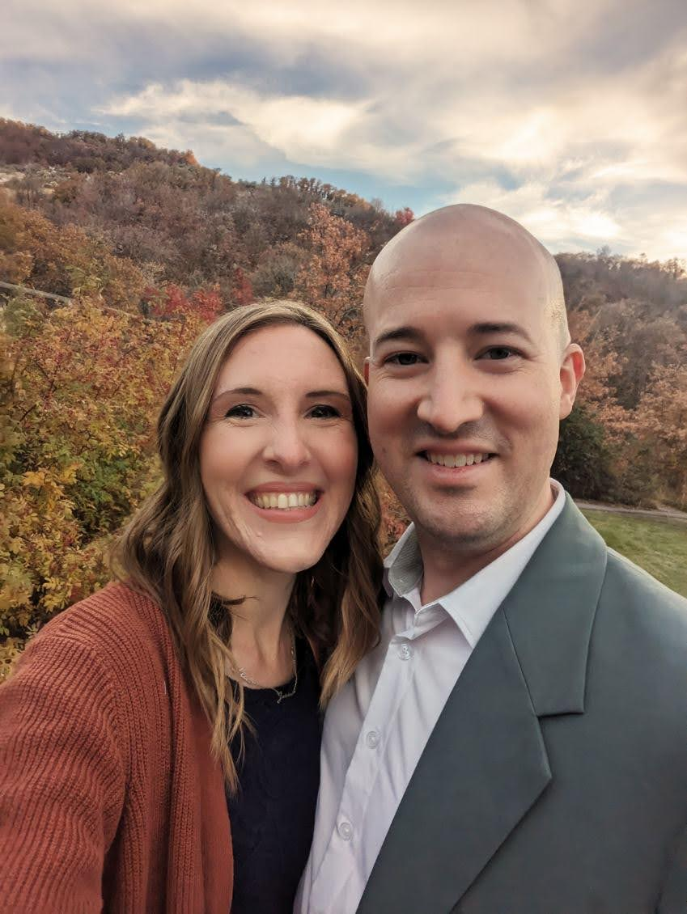

Steven Haws



I graduated from Utah State University with a Business Management Degree focusing on Human Resources.
For the first 4 years of my carreer, I worked as an in HR starting as an Assistant and working my way up to Generalist and Constultant.
I then joined the IT department to help build a new HRIS system in house, got trained as a developer and system administrator,
and worked on the project for 3 years.
After that project ended, I worked as the IT Manager for a growing manufacturing company, at which point the company was purchased by
a PE group and I moved to my next position as a Senior IT Manager for a Financial Services company. During that time I got my MSIS degree from
the University of Utah to keep learning and growing my skills.
After 4 years, they were purchased by a larger company and I was moved to a new position as the IT Project Manager working with NetSuite,
Workday, our Active Directory (hyrbrid).

My friends and family know me best for my eclectic hobbies, and above are two of the most unique.
I enjoy riding my recumbent trike and making atisanal cheeses.
Some of my other hobbies include tinking with my Linux box, working on an augmented reality app for a company call Aryzon,
playing retro video games, water fights, and racquetball.

A few years after gratuating from Utah State University, I ran into one of my friends from college.
Unknown to her, I had wanted to date her in college but didn't have the courage to ask her out.
After a few months of catching up, we started dating and were quickly married.
We now have a four more members of our family, all of whom get their stubbornness from their father and kindess from their mother.
I am always happy to connect with others, whether it be for work, networking, or just to chat about shared interests.
Feel free to connect with me on LinkedIn: My LinkedIn